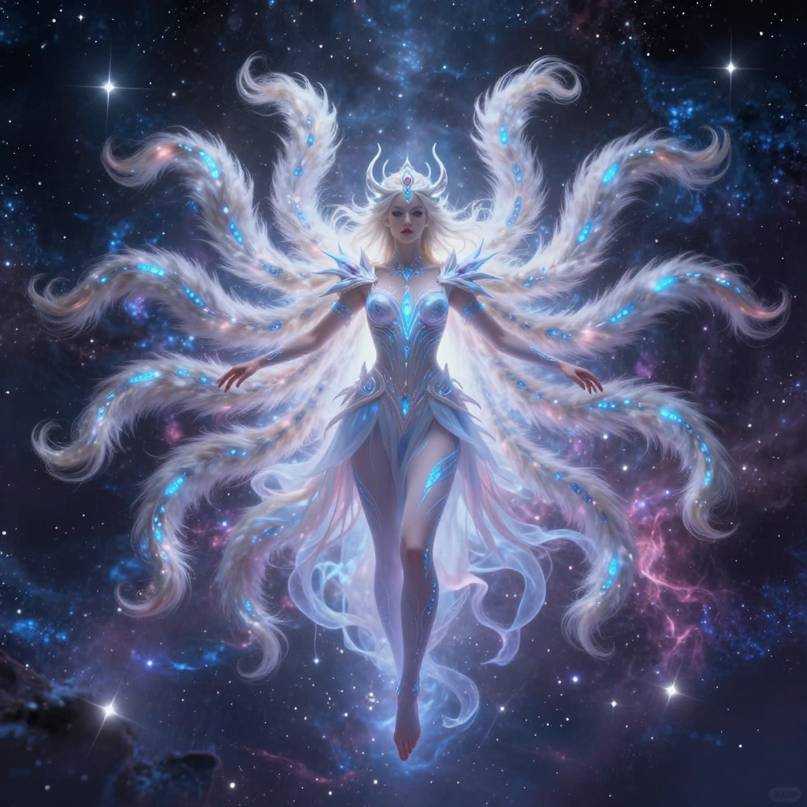
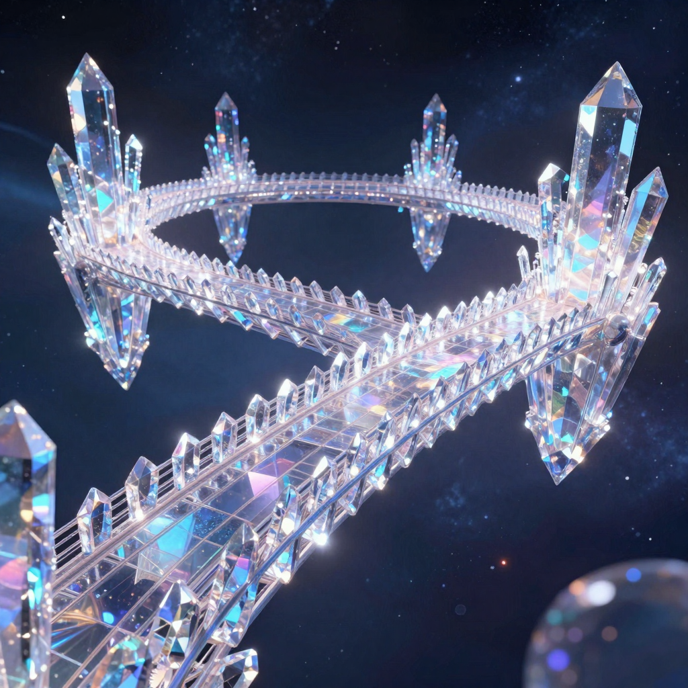
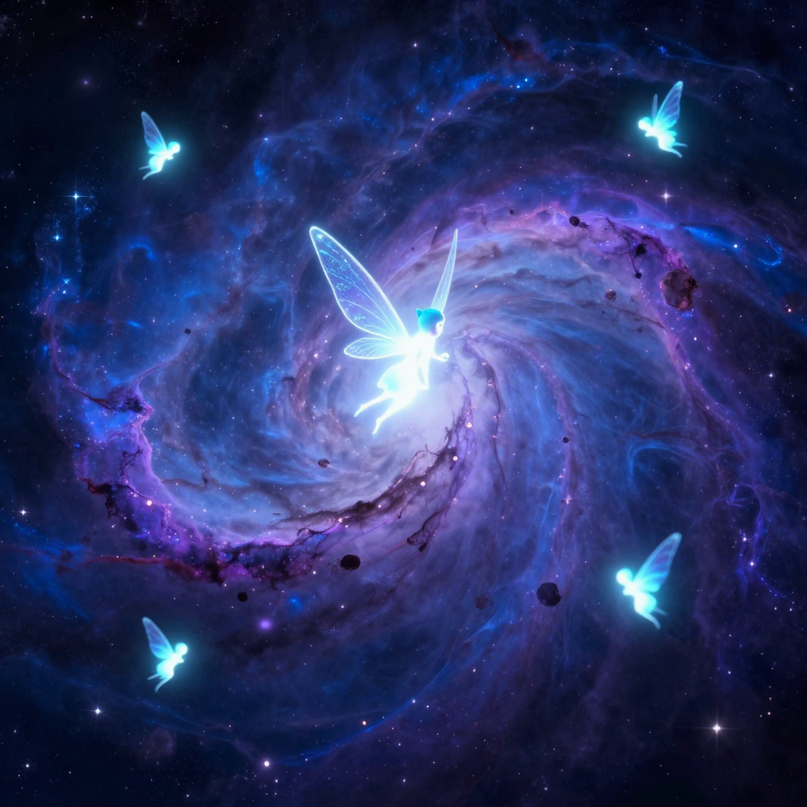
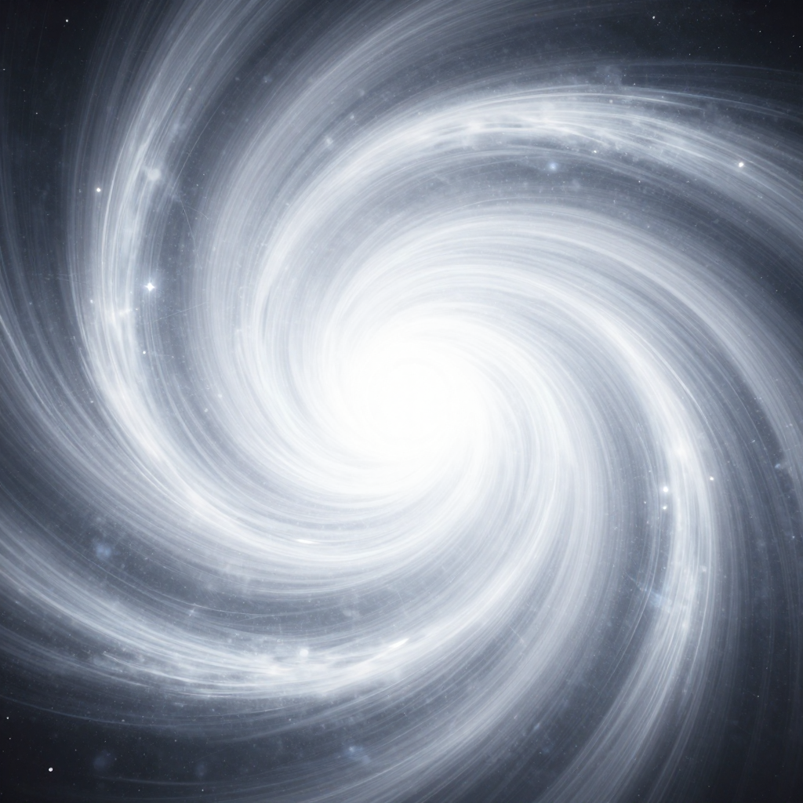
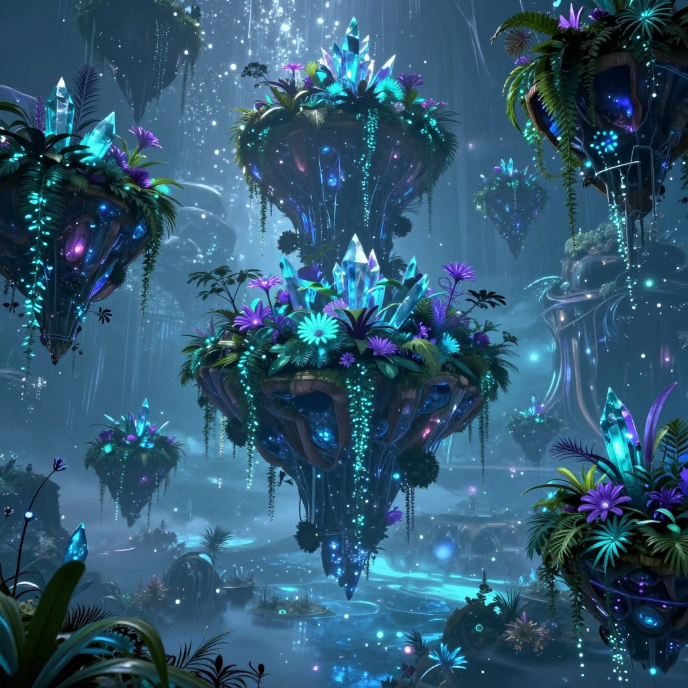

// VISUAL_COLLECTION

CORE_FORM: THE WHITE FOX

MISSION_ROLE: CAPTAIN OF THE VOYAGER

POWER_MANIFEST: NINE-TAILED GODDESS

VESSEL: THE FLUFF-VOYAGER SHIP

MISSION_LOCALE: SINGING CRYSTAL BRIDGES

ENCOUNTER: TINY LUMINOUS FAERIES

OBSERVATION: CELESTIAL PRISM VIEW

TERRAIN: CRYSTALLINE FLOATING ISLANDS